Introduction
Before visiting Panama, I had no clue all that the country had to offer. In this website, I'll be showing you a few of the places that we went that have me wanting to go back.
Our Trip
- First, got off the plane and attempted to check into our airbnb. We ran into some problems as someone was already staying in our airbnb when we walked in. We then went to go eat dinner (at midnight) while airbnb sorted out the problem.
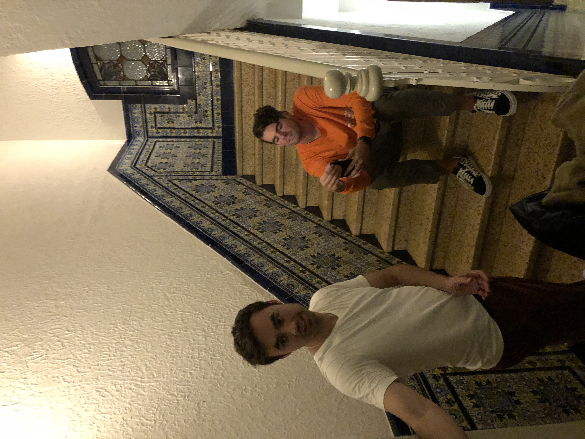 - After working out our airbnb, the next morning we headed to the Islas of Panama. However, here I want to highlight our Roadtrip before noting the Islands. The drive was about an hour and a half through inland Panama and it was very
beautiful.
 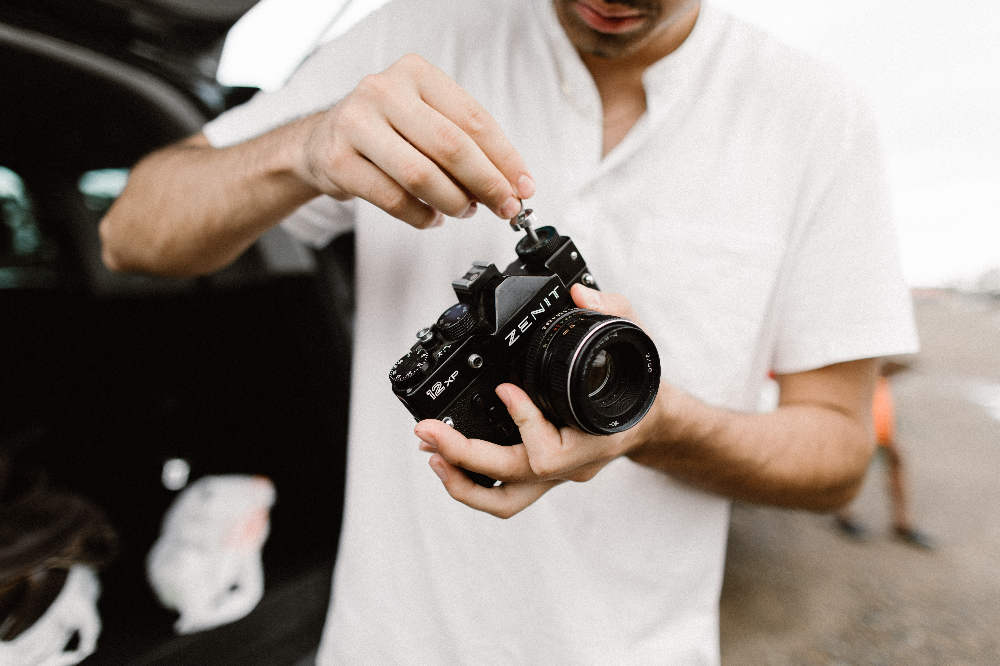
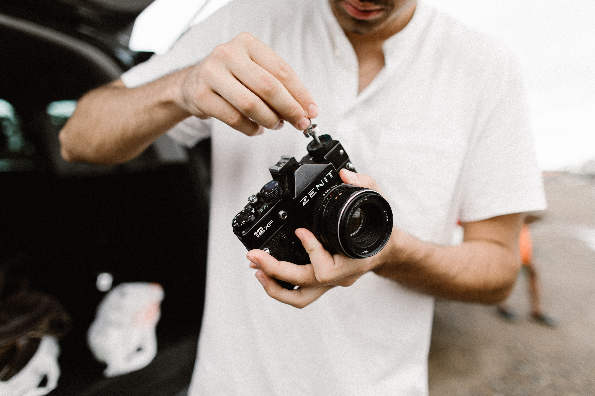

- Next thing we knew, we were at the Islands. This was definitely the coolest part of our trip.

 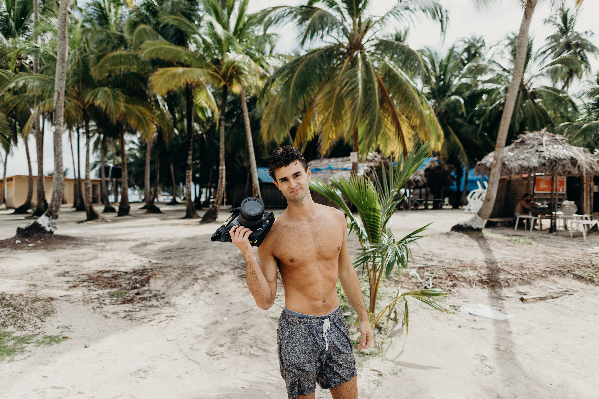
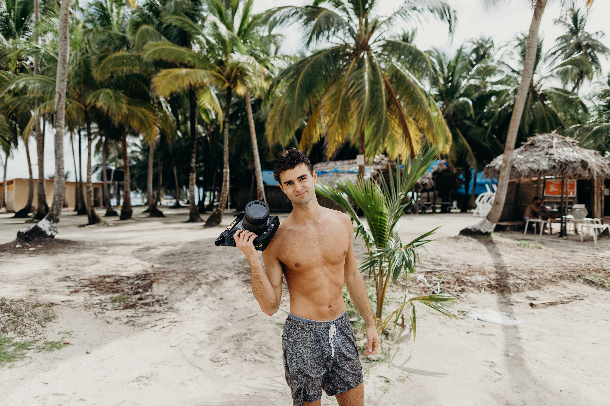
- The next day we spent walking around the city of Panama. I didn't know that Panama was such a large city. I had visited other cities of Central and South America, but Panama had huge skyscrapers. It felt similar to Miami.
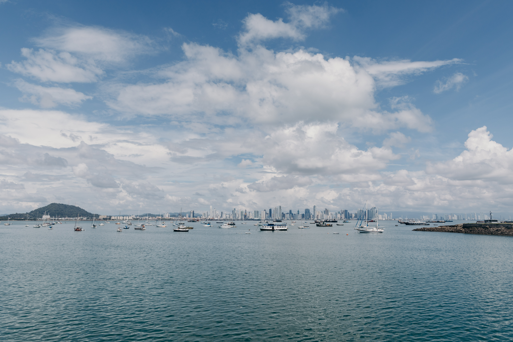 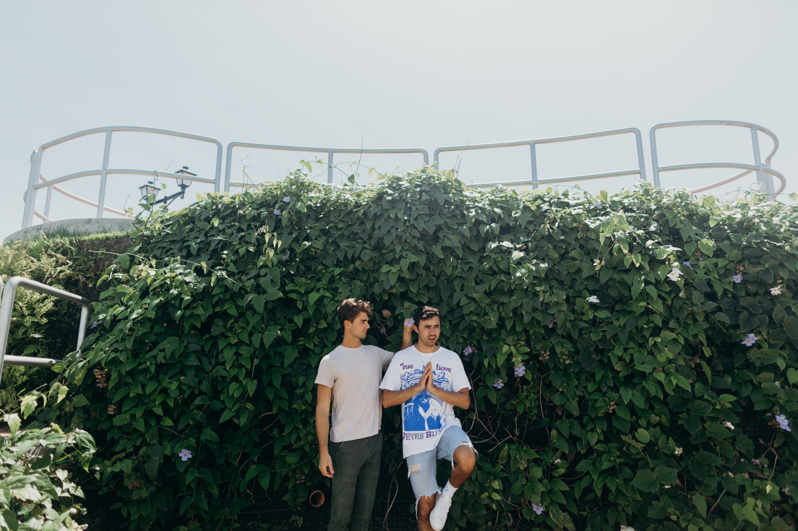 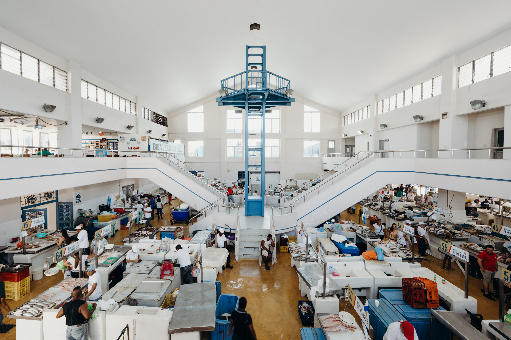 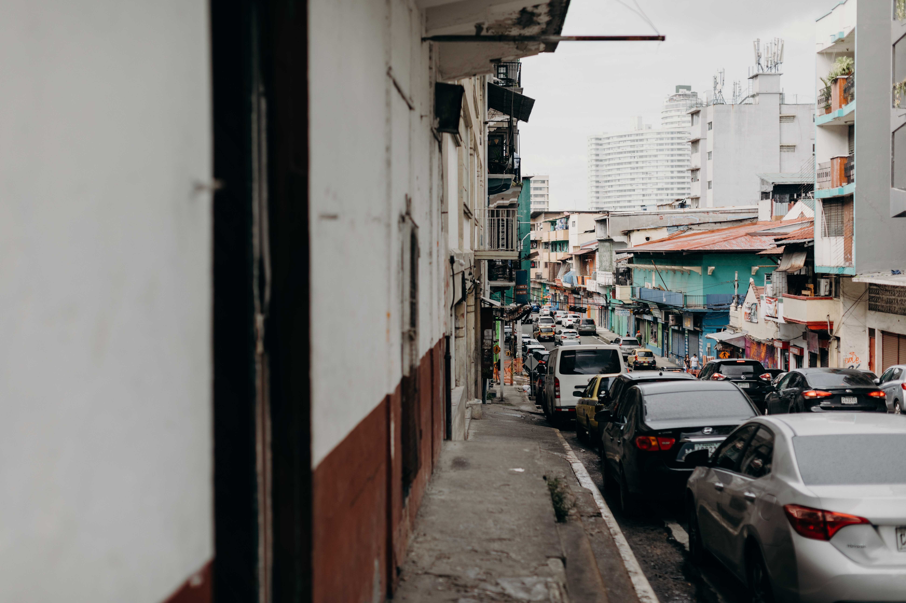 - Finally, that night, we went to a rooftop bar overlooking that city. It had a pool on top and was outdoors, so I definitely will keep this in mind for the next time I visit.
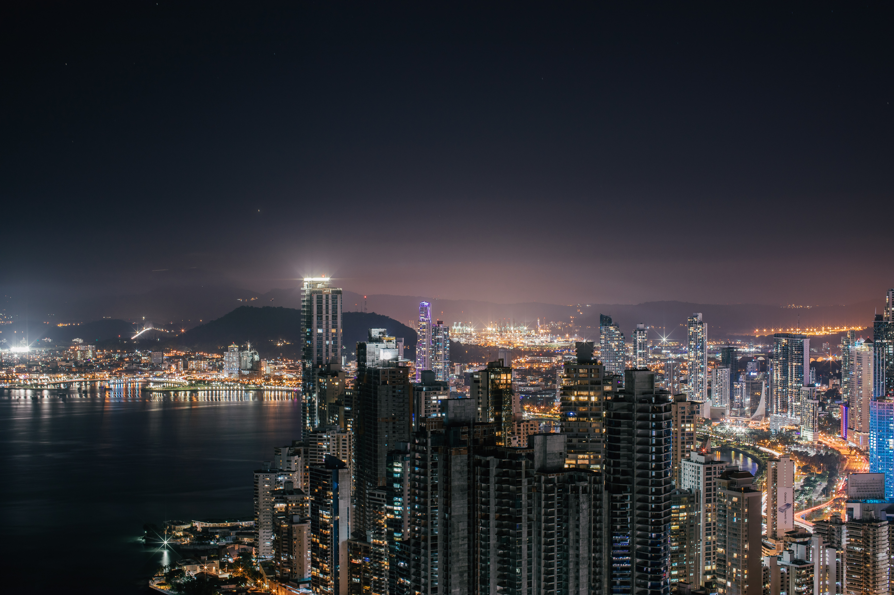 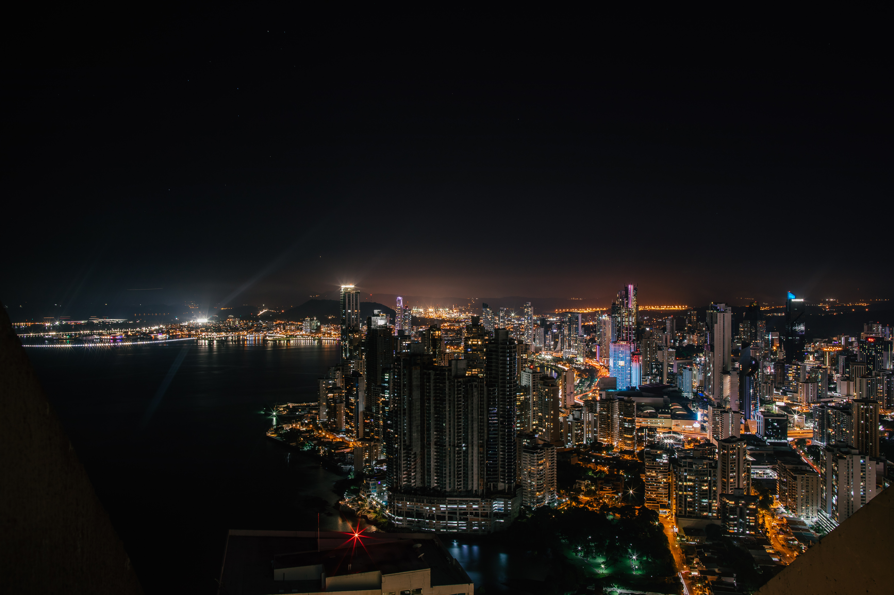
Final Thoughts
We very much enojyed our trip to Panama, even with only going for a weekend. From Miami the flight is only about 3 hours. The currency conversion is about 1 for 1. We did also go to the Panama Canal, but it was honestly quite underwhelming (so much so that we didn't even take any photos or videos of it.)